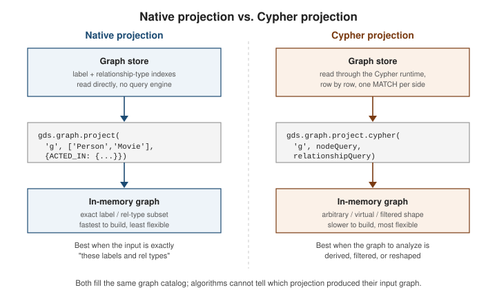
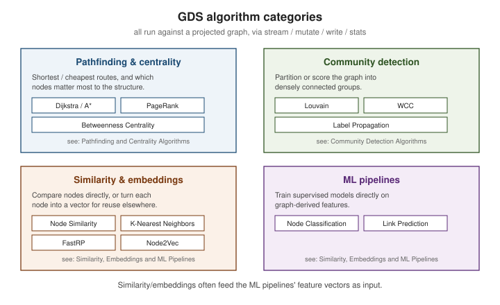

Graph Data Science fundamentals
|
This content was generated with the assistance of AI and should be verified against the official documentation before being relied on in production. |
The Graph Data Science (GDS) library is a separately installed plugin that runs algorithms over an in-memory projection of the graph rather than against the transactional store directly. Every GDS workflow starts the same way: project a graph into the catalog, run one or more algorithms against it in whichever execution mode fits the task, then drop it once it is no longer needed.
Running the examples
Every example on the GDS pages of this section was executed against a Neo4j server with the GDS and APOC
plugins installed. The official Docker image installs both from the NEO4J_PLUGINS environment variable, so a
disposable test server is a single command:
docker run -d --name neo4j-gds -p 7474:7474 -p 7687:7687 \
-e NEO4J_AUTH=neo4j/a-throwaway-password \
-e NEO4J_PLUGINS='["apoc","graph-data-science"]' \
neo4j:latest
docker exec neo4j-gds cypher-shell -u neo4j -p a-throwaway-password \
"RETURN gds.version() AS gds, apoc.version() AS apoc"Both versions printed 2026.10.2 on the calendar-versioned line this section documents. On a Community Edition
server the GDS library runs with a restricted thread count (four), which is plenty for the small graphs here;
the Enterprise license lifts that limit and adds the memory-management features needed for very large graphs.
The running example of the GDS pages is a small film graph: six actors and four films connected by ACTED_IN
relationships. It is deliberately tiny so that every score in the output can be verified by hand.
CREATE (ada:Person {name:'Ada'}), (bo:Person {name:'Bo'}), (cy:Person {name:'Cy'}),
(di:Person {name:'Di'}), (ed:Person {name:'Ed'}), (flo:Person {name:'Flo'})
CREATE (m1:Movie {title:'Nine Lives'}), (m2:Movie {title:'Red Horizon'}),
(m3:Movie {title:'Glass Orchard'}), (m4:Movie {title:'Paper Moon'})
CREATE (ada)-[:ACTED_IN]->(m1), (ada)-[:ACTED_IN]->(m2),
(bo)-[:ACTED_IN]->(m1), (bo)-[:ACTED_IN]->(m2), (bo)-[:ACTED_IN]->(m3),
(cy)-[:ACTED_IN]->(m3), (cy)-[:ACTED_IN]->(m4),
(di)-[:ACTED_IN]->(m4), (ed)-[:ACTED_IN]->(m4), (flo)-[:ACTED_IN]->(m3)The graph catalog and gds.graph.project
GDS never reads nodes and relationships from disk on every algorithm call. Instead, gds.graph.project
copies the selected nodes, relationships and properties into a compressed, named in-memory structure — the graph catalog — that algorithms then traverse directly, orders of magnitude faster than repeated
Cypher pattern matching
(GDS Introduction).
// Native projection: a named graph "people-movies" containing :Person and
// :Movie nodes connected by ACTED_IN relationships
CALL gds.graph.project(
'people-movies',
['Person', 'Movie'],
{
ACTED_IN: {
orientation: 'NATURAL'
}
}
)
YIELD graphName, nodeCount, relationshipCount
RETURN graphName, nodeCount, relationshipCountgraphName, nodeCount, relationshipCount
"people-movies", 10, 10The catalog entry is independent of the underlying database once created: later writes to :Person or
:Movie nodes do not change the projected graph until it is re-projected. Every algorithm call names the
catalog entry it runs against, never a label or relationship type directly.
Relationship orientation
A stored relationship always has a direction, but an algorithm may need to see it differently. The
orientation key of the relationship projection decides how each stored relationship is copied into the
catalog:
| Orientation | Effect | Relationship count for the film graph |
|---|---|---|
|
The relationship keeps its stored direction (the default). |
10 (Person to Movie) |
|
Every relationship is flipped, so a Movie points at its actors. |
10 (Movie to Person) |
|
Each relationship is stored in both directions. |
20 |
The orientation changes what direction-sensitive algorithms report. Degree centrality counts outgoing
relationships by default, so over the NATURAL projection it ranks actors, and over the REVERSE projection it
ranks films — same data, different question:
CALL gds.graph.project('pm-reverse', ['Person','Movie'], {ACTED_IN: {orientation:'REVERSE'}});
CALL gds.degree.stream('pm-reverse') YIELD nodeId, score
RETURN coalesce(gds.util.asNode(nodeId).name, gds.util.asNode(nodeId).title) AS node, score
ORDER BY score DESC, node LIMIT 4;node, score
"Glass Orchard", 3.0
"Paper Moon", 3.0
"Nine Lives", 2.0
"Red Horizon", 2.0Running the same procedure on the NATURAL people-movies graph returns Bo first with 3.0, then Ada and
Cy with 2.0 each. An algorithm that must ignore direction — connected components, triangle counting,
Louvain, Leiden — should be given an UNDIRECTED projection.
Carrying properties into the projection
Algorithms read weights and features from the catalog, never from the store, so every property an algorithm will use has to be projected. Node properties go in the optional configuration map, relationship properties go inside the relationship projection:
CALL gds.graph.project(
'roads', 'Location',
{ ROAD: { orientation: 'UNDIRECTED', properties: 'distance' } },
{ nodeProperties: ['latitude', 'longitude'] }
);A property that is missing on some nodes or relationships needs an explicit default, written as
distance: {property: 'distance', defaultValue: 1.0}; otherwise it is stored as NaN. When parallel
relationships exist between the same pair of nodes, the aggregation key (SUM, MAX, MIN, COUNT,
SINGLE) collapses them into one before an algorithm runs.
Native vs. Cypher projections
There are two ways to build a catalog entry, and the choice matters for both performance and flexibility.

-
Native projection — declared as label/relationship-type filters plus a property list, as in the example above. It reads directly from the store’s internal structures, so it projects fastest and scales to the largest graphs, but it can only select by label and relationship type, and any derived or computed values are not available.
-
Cypher projection — declared as a
MATCH-based query that returns arbitrary node and relationship rows, letting the projected graph be a filtered subset, a reshaped set of "virtual" relationships (e.g. a multi-hop path collapsed into one edge), or the result of arbitrary property computation. It is far more flexible but slower to build, since every row is evaluated through the Cypher runtime rather than read straight off disk.
// Cypher projection: collapse Person -[:ACTED_IN]-> Movie <-[:ACTED_IN]- Person
// into a single weighted CO_ACTED relationship between co-stars
MATCH (p1:Person)-[:ACTED_IN]->(:Movie)<-[:ACTED_IN]-(p2:Person)
WHERE id(p1) < id(p2)
WITH p1, p2, count(*) AS sharedMovies
WITH gds.graph.project('co-actors', p1, p2, {relationshipProperties: {weight: sharedMovies}}) AS g
RETURN g.graphName AS graphName, g.nodeCount AS nodeCount, g.relationshipCount AS relationshipCountgraphName, nodeCount, relationshipCount
"co-actors", 6, 7The projection is built with the Cypher aggregation function gds.graph.project, used as the last
aggregation of an ordinary query: every row contributes a source node, a target node and optional properties,
and the function assembles them into the catalog entry. Six actors and seven co-star pairs came out of the ten
ACTED_IN relationships, with the number of shared films stored as weight. Note that the projected
relationships are directed from the lower to the higher internal id, so run an algorithm that ignores
direction on it, or emit both directions from the query.
The older gds.graph.project.cypher(name, nodeQuery, relationshipQuery) procedure, which takes two query
strings, is still callable but is deprecated in favor of the aggregation function; new code should not use it.
Reach for a native projection whenever the algorithm’s input graph is exactly "these labels and
relationship types" — it is the default and should stay the default. Reach for a Cypher projection only
when the graph to analyze does not exist as a direct label/relationship pattern — a derived edge, a
filtered subset expressed with WHERE, or a graph built from a query that spans several relationship
hops
(GDS Introduction).
Execution modes: stream, mutate, write, stats
Every GDS algorithm ships as a family of procedures that share one algorithm implementation but differ in what happens to the result:
| Mode | Behavior |
|---|---|
|
Returns each result row directly to the caller. Nothing is persisted anywhere — use it to inspect results or feed them into further Cypher in the same query. |
|
Writes the result back onto the in-memory projected graph as a new node or relationship property, so a later algorithm in the same catalog entry can consume it without re-projecting. |
|
Persists the result back to the stored graph in the database as a node or relationship property, visible to ordinary Cypher queries once it completes. |
|
Returns only summary statistics about what the algorithm would produce (counts, timings, distribution percentiles) without returning or persisting any per-node result. |
// Same algorithm, four modes, against the "people-movies" graph
CALL gds.pageRank.stream('people-movies')
YIELD nodeId, score
RETURN coalesce(gds.util.asNode(nodeId).name, gds.util.asNode(nodeId).title) AS node, score
ORDER BY score DESC LIMIT 5;
CALL gds.pageRank.mutate('people-movies', { mutateProperty: 'pageRank' })
YIELD nodePropertiesWritten, ranIterations;
CALL gds.pageRank.write('people-movies', { writeProperty: 'pageRank' })
YIELD nodePropertiesWritten;
CALL gds.pageRank.stats('people-movies')
YIELD ranIterations, centralityDistribution
RETURN ranIterations, centralityDistribution.min AS min, centralityDistribution.max AS max;node, score (stream, scores rounded)
"Paper Moon", 0.469
"Glass Orchard", 0.384
"Nine Lives", 0.256
"Red Horizon", 0.256
"Cy", 0.15
nodePropertiesWritten, ranIterations (mutate)
10, 2
nodePropertiesWritten (write)
10
ranIterations, min, max (stats)
2, 0.14999961853027344, 0.46875190734863276Reading the output teaches something about direction. The people-movies projection is NATURAL, so influence
flows from actors to films and the films come out on top; the actors all sit at the base value 0.15
(one minus the default damping factor of 0.85) because no relationship points at them. Project the graph
UNDIRECTED, or run PageRank on a graph of people only, when the question is "which actor matters".
A mutated property lives only in the catalog entry. It can be read back without touching the store, and it can feed the next algorithm in the same pipeline:
CALL gds.graph.nodeProperties.stream('people-movies', ['pageRank'], ['Person'])
YIELD nodeId, nodeProperty, propertyValue
RETURN gds.util.asNode(nodeId).name AS name, nodeProperty, propertyValue
ORDER BY name;write runs the algorithm again and persists the result into the stored graph, after which an ordinary
MATCH (p:Person) RETURN p.name, p.pageRank sees it. Use stats first on a graph you have not analyzed
before: it reports iterations, timings and the score distribution (minimum, maximum and percentiles) without
returning one row per node, which makes it the cheap way to check that a configuration converges.
A common pipeline chains mutate calls across several algorithms on the same in-memory graph — each
algorithm’s output becomes the next one’s input property — and only calls write once, at the end, to
persist the final derived properties back to the database
(GDS Algorithms).
Inspecting and reshaping the catalog
The catalog is itself queryable, which is how to see what is currently held in memory and how much it costs:
CALL gds.graph.list()
YIELD graphName, nodeCount, relationshipCount, memoryUsage, schema
RETURN graphName, nodeCount, relationshipCount, memoryUsage, schema;graphName, nodeCount, relationshipCount, memoryUsage, schema
"co-actors", 6, 7, "9220 KiB", {relationships: {__ALL__: {weight: "Float (DefaultValue(NaN), TRANSIENT, Aggregation.NONE)"}}, nodes: {__ALL__: {}}}
"people-movies", 10, 10, "290 KiB", {relationships: {ACTED_IN: {}}, nodes: {Movie: {}, Person: {}}}A catalog entry can also be narrowed without going back to the store. gds.graph.filter creates a new entry
from an existing one with a node predicate and a relationship predicate; keeping only Person nodes drops every
ACTED_IN relationship, since each one ended on a film:
CALL gds.graph.filter('only-people', 'people-movies', 'n:Person', '*')
YIELD graphName, nodeCount, relationshipCount;
// only-people, 6, 0Algorithms also accept nodeLabels and relationshipTypes in their own configuration to work on a subset of a
projection without creating a new catalog entry.
Dropping graphs and estimating memory
A projected graph occupies heap memory for as long as it stays in the catalog. Drop it explicitly once the analysis is done rather than waiting for the database to restart:
CALL gds.graph.drop('people-movies') YIELD graphName;
// Safe in scripts: returns false instead of failing when the name is unknown
CALL gds.graph.exists('people-movies') YIELD exists;Dropping a name that does not exist raises an error by default, so cleanup scripts should check
gds.graph.exists first or pass false as the second argument (failIfMissing) of gds.graph.drop.
Because a projection is built entirely in memory, projecting a graph that does not fit crashes the
operation partway through. gds.graph.project.estimate runs the same projection logic against the
catalog’s cost model without allocating anything, returning the memory it would require so the projection
can be sized — or the instance upgraded — before committing to it:
CALL gds.graph.project.estimate(
['Person', 'Movie'],
{ ACTED_IN: { orientation: 'NATURAL' } }
)
YIELD requiredMemory, nodeCount, relationshipCount
RETURN requiredMemory, nodeCount, relationshipCountFor the film graph the answer is 288 KiB; an estimate for one algorithm run is just as direct — gds.pageRank.write.estimate('people-movies', {writeProperty: 'pr'}) reports 1072 Bytes of additional memory
for PageRank on top of the graph itself. The numbers are tiny here, but the same calls on a production-scale
label and relationship set tell you whether the heap and page cache are large enough before a long projection
fails.
Most individual algorithm procedures accept the same graph configuration with an .estimate suffix as
well (e.g. gds.pageRank.write.estimate), so both the projection and the algorithm run’s memory can be
checked ahead of time
(GDS Getting Started).
Algorithm categories
GDS ships four broad families of algorithms, all built on the catalog and execution modes above. Each has its own dedicated page in this section.

Pathfinding and centrality algorithms answer "what is the shortest/cheapest route between these nodes" and "which nodes matter most to the graph’s structure" — Dijkstra, A*, and centrality measures such as PageRank and Betweenness Centrality. See Pathfinding and Centrality Algorithms.
Community detection algorithms partition or score the graph into densely connected groups — Louvain, Weakly Connected Components, and Label Propagation are the most common entry points. See Community Detection Algorithms.
Similarity algorithms compare nodes to each other directly (Node Similarity, K-Nearest Neighbors), while node embeddings (FastRP, Node2Vec) turn each node into a numeric vector for downstream similarity search or machine learning, and the ML pipelines feature trains supervised models — node classification, link prediction — directly on top of those graph-derived features. See Similarity, Embeddings and ML Pipelines.
Related pages
-
GDS Documentation — the full library reference this page summarizes.
-
GDS Introduction — the catalog and projection concepts in more depth.
-
GDS Getting Started — installing the plugin and running a first algorithm end to end.
-
GDS Algorithms — the full algorithm catalog behind the category pages linked above.
-
Cypher Fundamentals — the query language used to build Cypher projections.